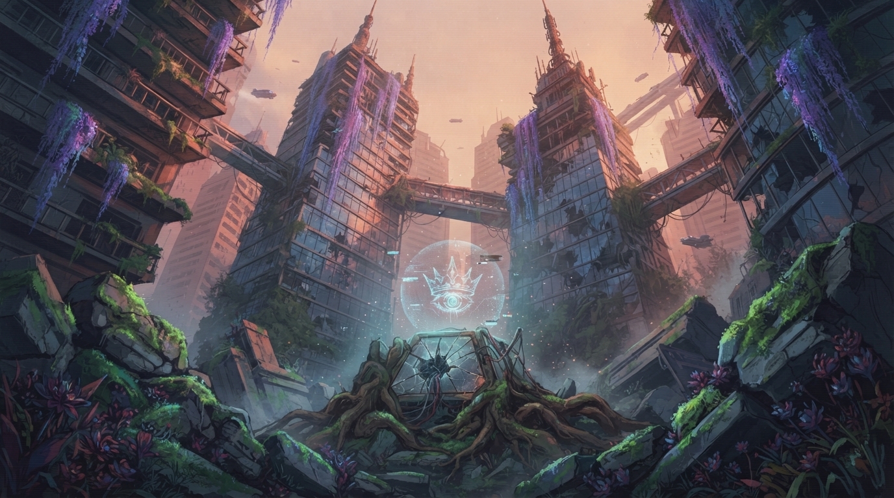
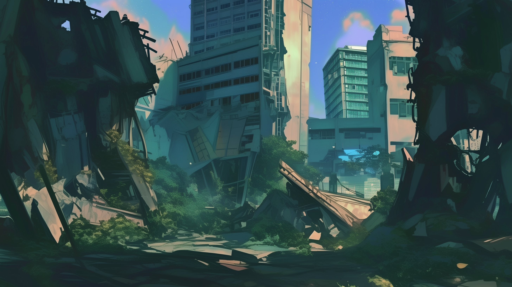
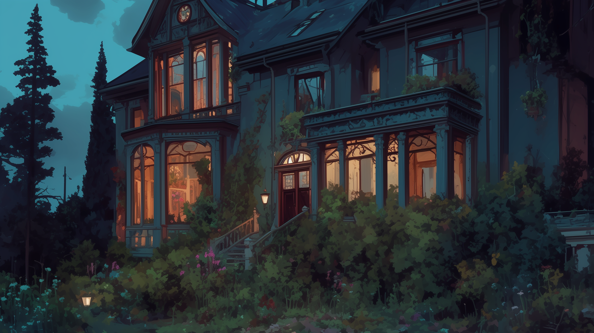
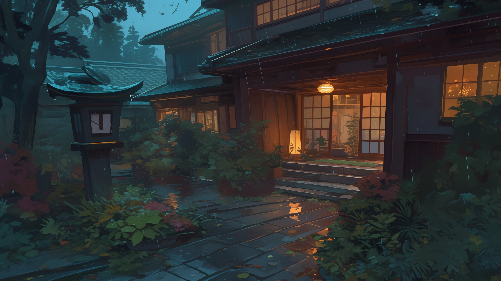

П.Р.И.Н.Ц._ЛИМБО
Автоматизированный комплекс высшей меры пресечения под надзором Верховного Трибунала. Создание персонализированного суррогатного ада для преступников высшего ранга через каскадный соматический стазис.



JAMMED


П.Р.И.Н.Ц. // Лимбо — кратко
П.Р.И.Н.Ц. — программа регулирования и исполнения наказаний «Цефей». В Лимбо попадает сознание человека: боль, запахи, вкус есть, на тело в капсуле это не действует.
Сюда направляют всех осуждённых по системе — от тех, кто ограбил, до серийных убийц. Сцена проверяет, раскаялся человек или нет.
Хронология системы:
2011 — первые черновики
2012 — начало разработки
2015 — тестирование на животных
2019 — первое удачное тестирование на человеке
2020 — патент и признание учёных
2026 — переход системы в руки правительства
2027 — смена курса: среда для наказания осуждённых
2028 — первые три теста провалены, есть жертвы
2030 — ЕЦСН, штабы, первые рабочие Сцены
2031 — присоединение Азии, Европы, Америки
2032 — весь мир на ЕЦСН
2039 — первые помехи и сбои в системе
⚠ ЧАСТИЧНО РАССЕКРЕЧЕНО · LVL_4
Сцена // Как это устроено
Сцена — отдельная «комната» в Лимбо. Она не пересекается с другими: свой ландшафт, свои правила, свой сценарий проверки.
Сознание внутри чувствует боль, запахи, вкус. Тело Смотрящего лежит в капсуле — система следит за здоровьем, в Сцену идёт только сознание.
В Лимбо попадают все по приговору: от грабителя до серийного убийцы. Сцена проверяет, есть ли раскаяние.
Тактовая частота движка: 240 Hz. Погрешность <0.001%. Отклонение психофона >12% — каскадная перегрузка (инцидент кластера #8).
Сетка быстрого доступа
Некоторые узлы требуют повышенного допуска. Аномальные сектора помечены. Выбор — на ваш страх и риск.
Хэ Ючоу
Досье Смотрящего A-55. Психопрофиль, соматическая совместимость, протоколы допуска.
Архив сцен · Том 1
Рёкан · Шанхай · Тихое место. Devlog инженеров, симуляции, статус секторов.
Полигон
Интерактивный симулятор. Тренировка Смотрящих, кооп-режим, криминалистика. v0.84
Сюань У · ZERO
Класс угрозы ZERO. Данные повреждены. Несанкционированный след в ядре.
Западный штаб
Полный реестр Западного региона. Вега, Коикэ, засекреченные операции.
Ядро Цефей
Прямой интерфейс к нейро-ядру. Только Совет директоров. Любая попытка логируется.